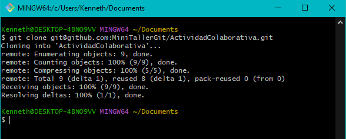

Primero abre tu terminal (o Git Bash en Windows) y muévete a la carpeta donde quieres clonar el repositorio. Por ejemplo, en Documents:
cd ~/DocumentsMoviéndose a la carpeta Documents.
Copia la URL SSH del repositorio colaborativo y usa el comando git clone:
git clone git@github.com:MiniTallerGit/ActividadColaborativa.gitEjecutando git clone con la URL SSH del repo.
Repositorio clonado exitosamente.
Después de clonar, entra al repositorio con:
cd ActividadColaborativaAccediendo a la carpeta del repositorio.
Después de clonar, es buena práctica comprobar que todo esté correcto:
El comando git branch muestra todas las ramas disponibles y marca con un asterisco (*) la rama en la que estás trabajando. Justo después de clonar solo deberías ver la rama main. En el siguiente paso aprenderás a crear tu propia rama.
git branchMostrando la rama actual: main.
El comando git status sirve para comprobar si hay archivos nuevos o modificados que aún no se han guardado (commit). Justo después de clonar debería decir working tree clean, lo que significa que no hay cambios pendientes:
git statusRepositorio limpio y listo para trabajar.
cd ~/Documents → Moverse a la carpeta Documents.git clone git@github.com:MiniTallerGit/ActividadColaborativa.git → Clonar el repositorio remoto usando SSH.cd ActividadColaborativa → Entrar a la carpeta del repositorio clonado.git branch → Ver en qué rama estás trabajando.git status → Comprobar si hay archivos modificados o pendientes de guardar.Ahora cada estudiante tiene su copia del repositorio colaborativo lista para trabajar. El siguiente paso será crear su propia rama para que cada persona pueda trabajar sin afectar el trabajo de los demás.